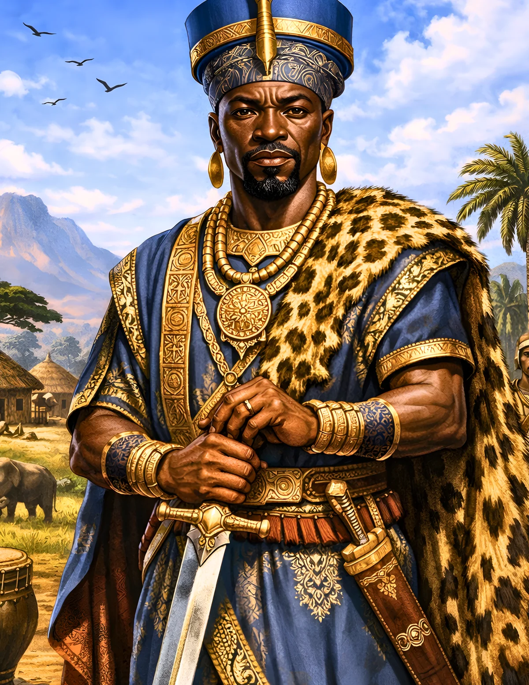

Sundiata Keita (Sunjata)
The founding of Mali through living oral traditions, powerful storytelling and the historian's search for corroboration.
Begin the Lesson ↓
Essential Question & Learning Objectives
Essential question: How can a performed epic preserve knowledge about the past while also changing across tellers, languages and generations?
Students will be able to:
- Locate the Manding region and identify the Mali Empire's thirteenth-century origins in West Africa.
- Explain the role of jeliw (griots) as skilled performers and keepers of historical knowledge.
- Distinguish major themes of the Sunjata epic from events that can be independently corroborated.
- Compare two representations of a tradition and create a defensible historical account that respects oral sources without treating every detail literally.
Success criteria: Explain two accurate historical details, examine at least one source limitation, make a supported claim, and score 4 of 5 on the post-check after review. The post-check is not a substitute for assessment of written reasoning.
Teacher Guide · Pacing, Standards, UDL & Differentiation
Suggested pacing: Hook and prior knowledge 5 min; readings, source comparison and questions 18 min; two Decision Rooms 12 min; performance task and peer discussion 15 min; final check 8 min. Adjust as needed; timer buttons are voluntary.
Instructional alignment: CCSS RH.6-8.1 (cite evidence), RH.6-8.2 (central ideas), RH.6-8.9 (compare sources); WHST.6-8.1 and WHST.6-8.9 (argument and evidence). Extend with grades 9–12 RH/WHST source criticism and historiography where appropriate; these are alignments, not a state endorsement.
UDL options: Let students reread chunks, use device accessibility tools, write or speak a claim, annotate a timeline/map, and revisit feedback without penalties. Use visual models alongside print rather than relying on audio alone.
Misconception to watch: Oral tradition is not simply 'made up' because it is performed. It also should not be treated as an unchanged transcript of thirteenth-century events.
Discussion practice: Ask students to separate the author's claim, the source's date and purpose, and the conclusions we can support.
CAST UDL Guidelines 3.0 · Common Core grades 6–8 historical literacy
Independent Learner Guide · Saving, Progress & Assessment
Start with the diagnostic. Read the three illustrated inquiry sections. Check responses and read the explanations; revise as needed. Decision Rooms are hypothetical choices that help analyze evidence, not factual reconstructions. Complete the final claim and five-item check. The progress bar measures how far you scroll, not mastery; timers are optional and cannot lower a score.
The written reflection saves only in this browser when you press Save. Avoid personal information on shared devices. Optional video areas indicate future, carefully verified media rather than implying an unpublished video exists.
Who Owns a Story That Lives in a Voice?
A jeli performs an account of Sundiata's childhood, exile, return and the struggle to found Mali. The audience knows familiar names, but the performer adjusts emphasis, language and detail. Two performances can differ without either losing cultural significance.
Imagine you're recording the performance for a history archive. Would your recording capture the complete truth about the thirteenth century, the meaning of the performance today, or both? Your challenge is to interpret an oral epic as art, memory and historical evidence at once.
Formative · Bloom: remember and understand · Do not grade the diagnostic
Before reading: Which claims about oral historical traditions are responsible?
Manding Communities and the Rise of Mali
Mali emerged as a major West African empire in the thirteenth century in the broader Manding world. Earlier and neighboring political communities, trade routes and farming regions formed the setting for new alliances and rivalries. Exchange across the Sahel connected people, commodities, beliefs and ideas long before any one empire dominated those networks.
Accounts of Sundiata (also spelled Sunjata, Soundjata or Sundjata) describe a leader whose coalition defeated the Sosso ruler Sumanguru, traditionally associated with the Battle of Kirina around 1235. The date and particulars are often reported through later narratives; scholars compare versions of the epic with medieval sources and regional history.
Do not substitute a modern map of Mali's borders for the political geography of the thirteenth century. A careful map labels historical regions and the broad areas of influence rather than claiming a precisely surveyed empire.
Check 1 · Which statement gives an accurate context?
The Epic as Living Performance
The Sunjata epic has been transmitted and performed by specialists often known as jeliw (singular jeli), frequently called griots in English. These performers combine narrative, genealogy, praise, music and commentary. Their work is not merely a written script recited aloud; the performance is shaped by language, patronage, setting and relationship with listeners.
Versions commonly include Sundiata's early hardships, exile, gathering of allies and conflict with Sumanguru. These stories show how communities explain authority, belonging, kinship and legitimate rule. Specific scenes and details may differ between performances and later transcriptions.
Scholars have collected multiple versions, including accounts recorded in the colonial period. A version written down in the twentieth century is direct evidence about that performance and its interpretation, while claims about the thirteenth century invite further corroboration.
Check 2 · Select accurate source evaluations.
Watch & Examine · Listening to a Living Epic
A related, age-appropriate museum or scholarly video will be embedded here after editorial and timestamp verification. The lesson and assessments work without video.
Suggested future video chapter prompts: storytelling techniques (timestamps pending), multiple versions (pending), historical corroboration (pending).
For primary research now, open the linked museum or historical sources at the end in a separate tab.
Leadership in the Founding Story
Sundiata is remembered as a figure of endurance and coalition-building, not only as a battlefield leader. Epic traditions give roles to family members, advisers and opponents; the social relationships among these characters can illuminate values concerning loyalty, justice, legitimacy and power.
The Mali Empire's subsequent growth depended on far more than one person's heroism: networks of communities, agriculture, trade and political arrangements mattered. Historians distinguish the epic's moral and symbolic structure from the social and material conditions that supported imperial expansion.
One caution is especially important: some modern accounts claim that an early 'charter' from Sundiata's era survives as an unchanged written constitution. Scholars debate the formation, dating and history of versions of the Kouroukan Fouga charter. Avoid presenting it as a verbatim document produced at a precisely documented thirteenth-century meeting.
Decision Room: Archive a Jeli's Performance
Formative historical inquiry · Scenario is a modern teaching simulation, not a reconstructed conversation
Your school records a jeli telling the Sunjata epic. A student asks you to shorten it to a timeline of battles and post the recording. What would you do?
Decision Room: Two Epics, Two Details
Formative historical inquiry · Scenario is a modern teaching simulation, not a reconstructed conversation
Two respected versions of the Sundiata story describe a key event differently. Your class wants a single 'official' answer. How should you respond?
Curate Two Voices from the Sunjata Epic
Make an evidence-based interpretive exhibit explaining how Sundiata's story is shared and what the surviving sources can and cannot establish.
- Write a 180-word exhibit comparing the epic's themes with the historical setting of medieval Mali.
- Create a split-page chart titled 'What the performance tells us' and 'What another source would need to confirm.'
- Develop a brief oral-history interview guide with five respectful questions about performance, attribution and context.
Every option needs: A clear claim; at least two details grounded in the readings; one acknowledgment of uncertainty; an explanation linking evidence to the conclusion.
Summative performance · 5–6 strong · 3–4 developing · 0–2 revise and conference
Show What You Know
Answer five questions, check each explanation, and revise as necessary. Correct feedback includes a confetti burst; inaccurate selections receive red feedback. Answers stay on this device.
1. The Sundiata traditions concern the origins of which empire?
2. A jeli is best described as...
3. Which features of oral performance matter for interpretation?
4. The commonly cited founding struggle is set in...
5. A strong history exhibit should...
Oral History, Listening and Attribution
- Invite a family member or community storyteller to discuss how stories change across tellers, with permission and privacy safeguards.
- Compare an academic summary of the Sunjata epic with a description of a recorded performance. Label the audience and date of each.
- Map West African exchange routes and annotate why agricultural communities, political alliances and trade mattered alongside heroic traditions.
Sources, Interpretations & Evidence Limits
The Sunjata epic survives through performed and collected oral traditions. Its transmission is part of the historical record, and scholarship explains why modern recordings must be distinguished from claims about medieval events.
Reading and scenarios are original educational synthesis and simulations, not quotations from these sources. External material opens in a separate tab. Verify exact wording, dates, and image permissions when assigning outside content.